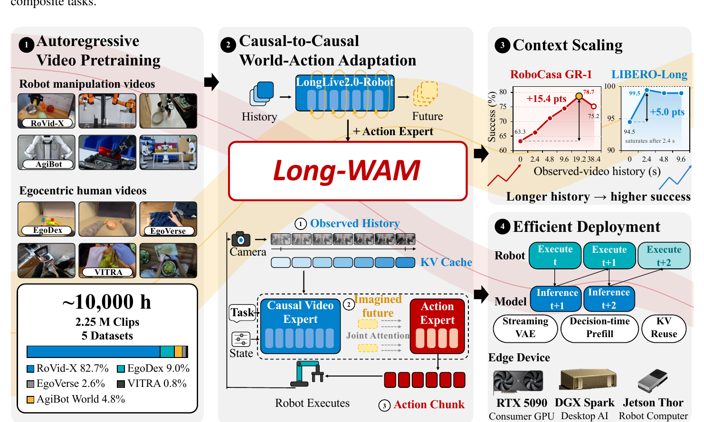
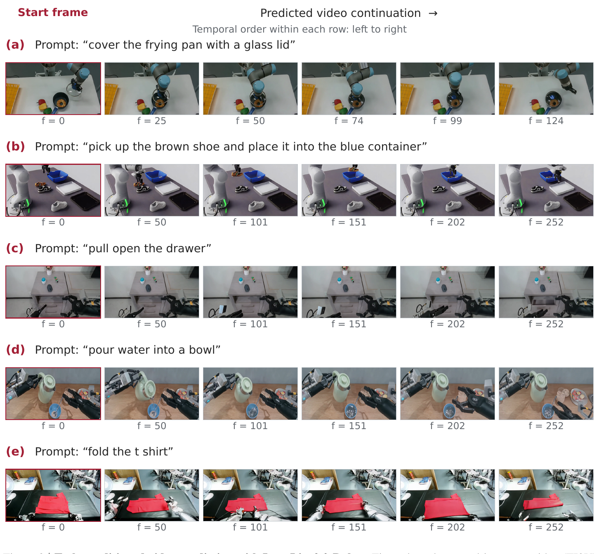
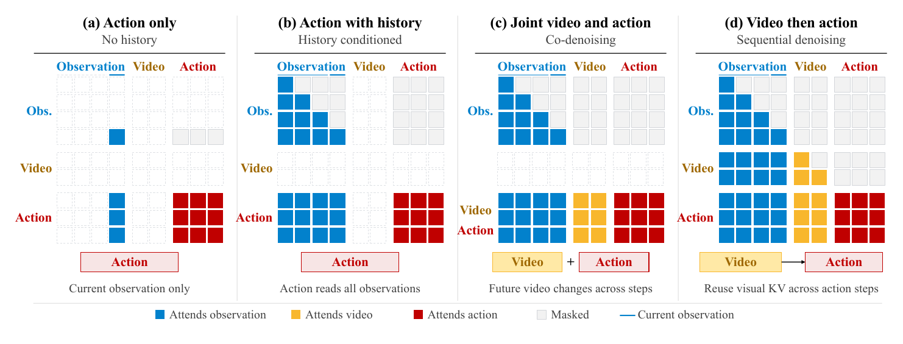
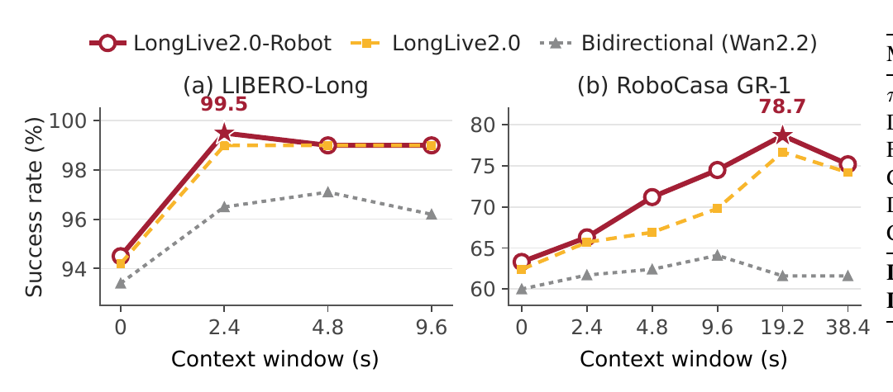
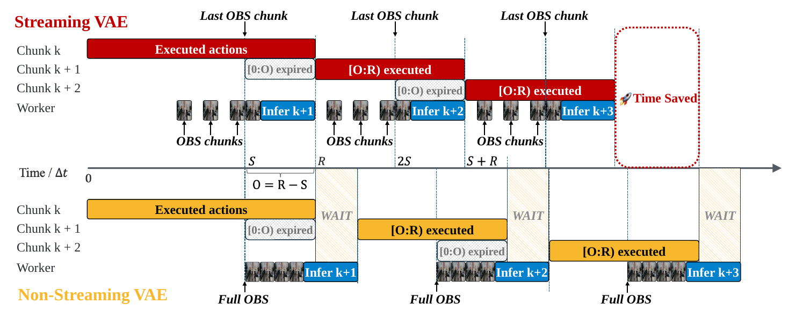
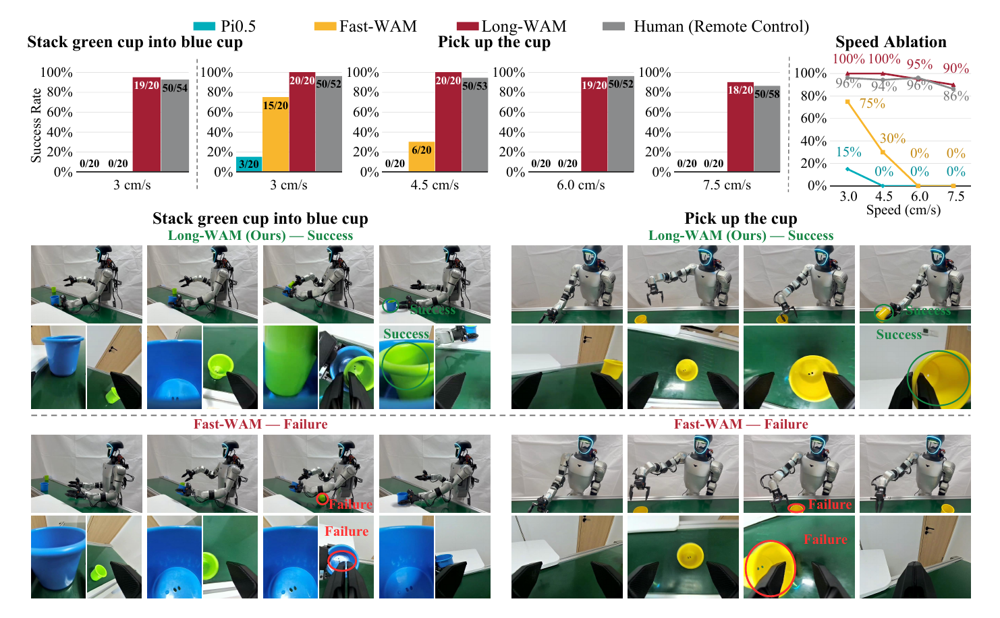

① 因果预训练匹配
先用约 10,000 个窗口等效小时的机器人与第一视角视频学习 AR 预测，再保留相同因果顺序适配动作。
Long-WAM 证明：长视觉历史只有在视频基础模型先学会自回归的“历史→未来”预测后，才会稳定转化为控制收益；再借助预测后行动（IDM）、流式视觉编码、异步动作块执行与低精度加速，将长上下文世界—动作模型压到可实时部署的延迟范围。
先用约 10,000 个窗口等效小时的机器人与第一视角视频学习 AR 预测，再保留相同因果顺序适配动作。
动作专家读取观察历史与部分去噪的未来潜变量；未来无需解码为像素，却能提供交互演化线索。
把上下文收益和响应时限一起优化：流式 VAE、KV 复用、异步交接、NVFP4 与设备特定 kernel 共同降低延迟。

机器人闭环控制需要判断的不只是“物体在哪里”，还包括“物体正往哪里移动”“夹爪是否已经接触”“当前子任务进行到哪一步”。单帧图像可以提供空间状态，却无法唯一确定运动方向和任务进度。视频历史因此是一种直接的物理记忆：它包含速度、接触变化、遮挡前状态以及动作执行后的反馈。
世界—动作模型（World-Action Model, WAM）把视频生成模型的动力学先验与动作生成结合起来。与只从视觉特征直接回归动作的策略不同，WAM 可以显式或隐式预测场景将如何演化，再以预测结果指导动作。DreamZero、LingBot-VA、Fast-WAM 等工作已经展示了视频模型对机器人控制的价值，但“模型能接收更长历史”与“模型确实会从更长历史中提取有用因果证据”仍是两个不同命题。
现有记忆方法多关注缓存容量、压缩、检索或持久状态。Long-WAM 把问题推进到预训练因子分解：如果基础视频模型在预训练中采用双向注意力，它学到的是在已知前后文条件下恢复或生成；下游再改成因果控制掩码，并不能保证它已形成从过去外推未来的能力。论文将这一点概括为：access to history is not the same as using it
。这不是缓存工程问题，而是预训练目标与下游推理结构是否一致的问题。
另一方面，历史越长，视觉 token、VAE 编码、注意力 prefill 和 KV 缓存成本越高。对离线视频生成而言，多几百毫秒主要影响吞吐；对机器人而言，它会直接造成动作交接迟到。Long-WAM 因而同时研究两个问题：长上下文在什么预训练条件下提升成功率，以及如何在保留未来预测的情况下按时产出动作块。
最终方案不是单一模型改动，而是模型与系统共同设计：LongLive2.0-Robot 提供机器人域 AR 视频基础；因果到因果的 WAM 适配保留“历史→未来”的顺序；IDM 先生成部分去噪的未来潜变量，再生成动作；部署端用流式 VAE、异步执行、KV 复用、NVFP4 和设备调优隐藏或削减计算。
自回归（autoregressive, AR）视频模型把长视频拆为时间块，并按时间顺序建模。第 $i$ 个目标块只能读取真实的历史块 $h_{<i}$，不能读取未来块。Long-WAM 使用 teacher forcing：训练时所有目标块可以并行计算，但每一块的注意力掩码仍保持因果关系。这使预训练阶段学到的条件分布与控制时“从已观察历史预测下一段变化”的需求一致。
视频和动作分支都采用线性噪声路径。令干净样本为 $x$、高斯噪声为 $\epsilon$、噪声水平为 $\sigma\in[0,1]$，则：
人话解释：$\sigma=0$ 时输入接近真实数据，$\sigma=1$ 时接近纯噪声；网络学习速度 $u$，推理时沿反向轨迹把噪声逐步推向视频潜变量或动作序列。
策略一次输出 $H$ 步动作块，而不是每一步都重新推理。动作块可降低决策频率，但新旧块的时间对齐会影响平滑性。Long-WAM 允许机器人执行当前块时并行计算下一块；新块到达后，已经过期的前缀被丢弃，只执行与当前绝对控制时刻对齐的后缀。
问题。直接把双向视频生成器适配成因果控制器，会在下游才开始学习“过去如何决定未来”。当动作数据规模远小于互联网或机器人视频时，这一能力可能学不充分。Long-WAM 从 LongLive-2.0 的 16 秒 AR checkpoint 继续训练，使用 RoVid-X、AgiBot World、EgoDex、EgoVerse 与 VITRA，共 2,294,889 个模型就绪样本；以每个训练窗口 16 秒计，训练集约为 10,004.5 个窗口等效小时。这里不是 10,000 小时互不重叠的原始录像，重叠窗口和 padding 会影响实际独特时长。
怎么做。预训练序列最长 30 秒。对第 $i$ 个干净视频潜块 $\bar z_i$，采样噪声 $\bar\epsilon_i$ 和噪声水平 $\sigma_i$：
人话解释：模型看到被不同程度破坏的当前块，以及未被破坏的先前视频块；它必须利用历史恢复当前块的运动和交互状态。
teacher-forcing AR 目标为：
符号解释：$v_\theta$ 是视频速度预测器，$h_{<i}$ 是先前真实视频块，$c$ 是语言条件，$w$ 是噪声调度权重。误差回收会用缓冲区中的模型误差扰动上下文或输入，但恢复目标仍指向原始 $\bar z_i$，使模型学习纠正 rollout 型偏差。
为什么有效。视频预训练不需要统一动作空间，因此不同机器人形态和人类第一视角数据可以共同提供接触、位移、遮挡与物体状态变化的监督。它预先建立的是“视觉动力学”，下游只需学习如何把某一 embodiment 的动作表示接到该动力学上，而不必从较小的动作标注集重新发现时间因果结构。

问题。如果动作 token 反向影响视频 token，视频预测可能退化为“知道动作后的结果重建”，从而破坏独立的未来预测。Long-WAM 使用非对称接口：视频 query 只读取自身及更早的视觉块，永远不读动作；动作 query 则读取观察历史、部分去噪的未来和整个噪声动作块。这样，视频专家保持从历史到未来的因果方向，动作专家可以把预测未来当作控制条件。

在控制步 $t$，令 $Z_t^-$ 为已观察视频潜变量，$q_t$ 为机器人本体状态，$c$ 为语言指令，$A_t=a_{t:t+H-1}$ 为长度 $H$ 的动作块。视频专家 $\theta$ 从噪声 $\epsilon_v$ 生成 $K_v$ 个未来潜步，但只去噪到 $\sigma^\star=0.9$；随后将观察历史和预测未来做 prefill，形成分层视觉 KV 缓存 $\mathcal K_t$：
人话解释：系统不需要生成清晰视频；它只需得到包含“接下来大概如何变化”的潜表示，并把这一表示压入可重复读取的 KV 缓存。
动作专家 $\psi$ 再从独立噪声 $\epsilon_a$ 去噪动作：
人话解释：动作不只是响应当前图像，而是响应“已经发生什么”和“预计马上发生什么”。因为视觉 KV 在一次动作求解的多步去噪间复用，先视频后动作的串行代价得到部分摊销。
论文描述的训练分为视频 flow matching 和动作 flow matching 两遍。动作分支读取由真实未来加噪到 $\sigma^\star=0.9$ 得到的训练代理；视觉 cache 被 detach，因此动作损失只更新动作专家和本体状态适配器。对分支 $b\in\{v,a\}$，使用有效元素掩码 $m_b$：
人话解释：padding 的视频帧和动作步不计入损失；动作分支不能通过梯度“篡改”视频专家来迎合正确动作。需要同时看到：训练时未来仍含真实数据残量，而推理时未来从纯噪声开始，因此两者条件分布并不完全相同。
总目标为：
人话解释：$\lambda_v$ 与 $\lambda_a$ 平衡“保持视频预测能力”和“学会输出动作”。这种解耦让视频基础不被动作监督过度改写。
论文改变的是因果前缀中真实观察的持续时间，同时固定每个 benchmark 内的未来预测长度与动作 horizon。每个历史长度单独训练一个模型，并在训练长度上评估；episode 开头历史不足时重复初始帧。这个设计能回答“同一个近期决策是否从更多过去证据获益”，但不能证明一个 checkpoint 能在测试时自由改变窗口。
比较对象包括双向预训练 Wan2.2、通用 AR 的 LongLive-2.0，以及机器人域 AR 的 LongLive2.0-Robot。三者下游都采用因果 WAM 掩码，因此差异集中于基础模型是否在预训练阶段就学过历史到未来的分解。结果表明，真正随上下文持续增长的是两个 AR 初始化，而不是仅仅把双向模型的输入窗口拉长。

令动作 horizon 为 $H$，其中前 $R$ 步有资格执行；相邻推理的触发 stride 为 $S$，满足 $R/2\le S<R\le H$，重叠长度为 $O=R-S$。机器人执行当前块时并行计算下一块。到交接点后，新块中对应已经过去时间的前缀被丢弃，只执行时间对齐的后缀。论文的简洁判断是：Pure asynchronous execution suffices.
，即实验中不需要额外动作 blending 或 prefix guidance。
按时交接要求从触发观察可用起的准备时间满足：
人话解释：重叠越短，新动作块越贴近最新观察，但留给模型的计算时间也越少。系统必须在响应新信息与给推理留足时间之间取平衡。
非流式方案在触发后重新编码整段观察窗口，长历史会反复制造等待。流式因果 VAE 在机器人执行期间按时间组编码新帧；触发后只编码尚未到来的尾部帧，再拼接、投影并归一化潜变量。它不减少历史信息，而是改变计算发生的时刻，因此直接缩短 post-trigger 临界路径。

共享优化包括：视频专家线性层使用 W4A4 NVFP4，动作计算和 KV 保持 BF16；CUDA Graph 与编译减少小 kernel 启动开销；同一次推理调用内复用文本/状态 KV、观察视频 KV 和 FP32 RoPE 表；Q/K/V 投影共享一次输入量化。动作注意力面对分开的视觉与动作 KV 缓冲区时，用在线 softmax 合并统计量而不拼接缓存：
人话解释：两个 KV 段分别计算局部最大值、指数和与加权值，再在数值稳定的共同尺度上合并，结果等价于对拼接后的完整 KV 做 softmax，却省去显存复制。
设备特定优化不是改变算法，而是针对 RTX 5090、DGX Spark 和 Jetson AGX Thor 的 SM 数量、共享内存与寄存器约束选择量化/GEMM tile、warp、pipeline stage、VAE layout 和 attention backend。最终相对 BF16 eager 分别达到 3.3×、4.1× 和 3.2× 端到端加速。
预训练约消耗 30,720 H100 GPU-hours（64 张 H100），下游 WAM 使用 16 张 GB200。仿真覆盖 LIBERO、RoboTwin 2.0、DOMINO、RoboCasa GR-1 和 RoboCasa365；真实机器人覆盖 Unitree G1 动态传送带任务与 YAM 长时程桌面任务。主结果并不是只在一个 benchmark 上证明“历史有用”，而是把静态长任务、动态拦截、双臂操作、组合规划和边缘部署串成一条证据链。
| Benchmark | Long-WAM | 最强列出基线 | 差值与解释 |
|---|---|---|---|
| LIBERO 平均 | 99.5 | LingBot-VA 98.5 | +1.0；四套任务接近饱和 |
| LIBERO-Long | 99.5 | LingBot-VA 98.5 / Fast-WAM 95.2 | +1.0 / +4.3；长任务受益最大 |
| RoboTwin 2.0 平均 | 94.4 | ABot-M0.5 94.1 | +0.3；优势较小但跨 clean/randomized 稳定 |
| DOMINO SR | 34.9 | Fast-WAM 19.9 | +15.0；动态物体近期运动线索价值明显 |
| RoboCasa GR-1 | 78.7（19.2 s） | Cosmos Policy 67.1 | +11.6；多阶段任务需要更长物理历史 |
最有说服力的不是 99.5% 的单个数字，而是三组相互支持的对照。第一，IDM 在 LIBERO-Long 从“不预测未来”的 94.5% 提高到 99.5%，说明未来潜变量是有效控制表征。第二，GR-1 中 AR 初始化随窗口增长，而双向初始化基本不增长，说明历史收益依赖预训练因果结构。第三，DOMINO 与真实传送带任务都要求预测移动物体，Long-WAM 的优势在速度增加时仍保持，说明收益不只来自记住静态任务阶段。
| 设置 | 短上下文 | 长上下文 | 变化 |
|---|---|---|---|
| GR-1，LongLive2.0-Robot AR | 63.3（0.0 s）/ 66.3（2.4 s） | 78.7（19.2 s） | +15.4（相对 0 s）/ +12.4（相对 2.4 s） |
| GR-1，LongLive-2.0 AR | 65.7（2.4 s） | 76.7（19.2 s） | +11.0 |
| GR-1，Wan2.2 双向预训练 | 61.7（2.4 s） | 61.6（19.2 s） | -0.1，基本无净收益 |
| LIBERO-Long，Robot AR | 94.5（0.0 s） | 99.5（2.4 s） | +5.0，随后饱和 |
在 GR-1 上，机器人域 AR 相对双向初始化的优势从无历史时 3.3 个百分点扩大到 19.2 秒时 17.1 个百分点。这种“差距随上下文放大”比只比较峰值更关键：如果 AR 预训练只提供更好的静态视觉特征，差距应近似恒定；现在差距随历史增长，支持它确实改变了历史信息的利用方式。
38.4 秒时 Robot AR 从 78.7% 降至 75.2%，不应直接解释为模型存在 19.2 秒的内在记忆上限。该窗口是平均训练轨迹 12.1 秒的三倍，采样历史中 80.4% 是 padding。更合理的判断是数据没有提供足够密集的真实长历史。与此同时，19.2 秒在 RTX 5090 上要 341.0 ms，说明更长上下文即使有信息，也必须受响应预算约束。
| 策略 | LIBERO 平均 | LIBERO-Long | RoboTwin 2.0 平均 | 含义 |
|---|---|---|---|---|
| w/o V：不预测未来 | 97.3 | 94.5 | 92.0 | 历史直接条件动作 |
| CoD：视频与动作共同去噪 | 97.8 | 95.8 | 93.6 | 未来随动作去噪过程共同变化 |
| IDM：先视频后动作 | 99.5 | 99.5 | 94.4 | 先固定预测未来，再复用视觉 KV 生成动作 |
IDM 在 LIBERO-Long 相对 w/o V 提高 5.0 点，相对 CoD 提高 3.7 点；在 RoboTwin 上增益较小。这个差异提示，显式“先预测交互如何演化”更适合需要多个子步骤协调的任务，而在短时、近反应式任务上，共同去噪可能已足够。IDM 的代价是串行执行视频和动作去噪：同为 V4/A4，RTX 5090 上 IDM 为 107.4 ms，CoD 为 90.9 ms。
在 Unitree G1 上，每个策略与速度条件评估 20 次。Long-WAM 在 3.0、4.5、6.0、7.5 cm/s 传送带抓取上分别达到 100%、100%、95%、90%；Fast-WAM 为 75%、30%、0%、0%，$\pi_{0.5}$ 为 15%、0%、0%、0%。动态叠杯任务要求先抓蓝杯，再拦截移动绿杯并插入，Long-WAM 为 19/20，而两个基线均为 0/20。这组结果把“历史提供运动线索”落实到物理系统，而不是只停留在仿真曲线。

在 YAM 上，颜色砖块分类、饺子入锅、碗堆叠的成功率分别为 80%、80%、85%，三任务平均 81.7%，任务平均持续超过 40 秒。这里的证据说明策略能持续执行多步操作，但论文没有在 YAM 上做与等规模强基线的完整对照，因此它更适合作为可部署性与长时程能力展示，而不是独立证明算法优势的主实验。
| 指标 | 结果 | 解释 |
|---|---|---|
| RTX 5090，V4/A4 | 107.4 ms，SR 93.5 | 含完整 observation VAE 和未来视频潜变量预测 |
| RTX 5090，V2/A2 | 81.8 ms，SR 92.5 | 再降 24% 延迟，牺牲约 1 个 SR 点 |
| DGX Spark / Thor | 328.2 / 378.7 ms | 相对 BF16 eager 为 4.1× / 3.2× |
| IDM 同步→异步（$S=12$） | 94.4→94.2 | 仅 -0.2 点；RMSE 0.0246，jerk 0.0436 |
| IDM 异步（$S=16$） | 95.0 | 重叠缩短至 8 步，RMSE 0.0063，jerk 0.0156 |
最关键的系统结论不是单纯的 3.3× 加速，而是加速后仍保留未来预测，且异步执行几乎不损失成功率。对比中 Fast-WAM 与 LingBot-VA 从同步到异步分别下降 15.4 和 45.5 点，而 Long-WAM IDM 只下降 0.2 点。作者把这一现象归因于 AR 视频基础提供的时间连续预测；不过这里仍是相关性证据，未通过控制预测连续性而保持其他因素不变的实验建立严格因果关系。
官方代码位于 NVlabs/LongLive/Long-WAM。仓库给出 LIBERO、RoboTwin 2.0 的 IDM/CoD checkpoint，GR-1 的 0、2.4、4.8、9.6、19.2 秒 checkpoint，以及 RoboCasa365、YAM 和 LongLive2.0-Robot 视频模型。以下只摘取最能说明论文设计的短片段；路径均相对 Long-WAM/。
src/longwam/models/wan22/longwam_idm.py# Stage 1: denoise video only.
for step_t_video, step_delta_video in zip(...):
pred_video = self.video_expert(...)
latents_video = self.infer_video_scheduler.step(...)
# Stage 2: freeze denoised video as cond and denoise action via video K/V cache.
video_kv_cache = self.mot.prefill_video_cache(...)
for step_t_action, step_delta_action in zip(...):
pred_action = self._predict_action_noise_with_cache(...)这段实现直接对应论文 Equation (3) 和 Figure 2(d)：视频阶段独立运行，随后只做一次视觉 prefill；动作多步去噪读取同一视觉 KV。需要注意，公开仓库还包含更通用的基类路径、联合去噪路径和训练代理，不能仅凭此函数推断所有 benchmark 的完整运行配置。
src/longwam/runtime/streaming_vae.pydef feed(self, step, frame):
expected = self.anchor - self.past_steps + self._count * self.sample_stride
...
if len(self._pending) == count:
chunk = torch.stack(self._pending, dim=1).unsqueeze(0)
self.model._stream_video_latents_step(chunk)
def finish(self, anchor):
result = self.model._stream_video_latents_finish()
return result实现不只是缓存任意帧，而是严格检查 anchor、sample stride、VAE 时间下采样组和最终 latent 帧数。这些约束保证流式编码与整窗因果 padding 的语义一致；否则“更快”可能来自漏帧或时间错位，而不是等价重排计算。
src/longwam/runtime/execution.pyif not self._anchor <= self.step < self._anchor + self.schedule.execute:
raise RuntimeError("The candidate has no eligible suffix at this boundary")
self._active = (self._anchor, actions)
...
action = actions[self.step - anchor].copy()动作索引由当前绝对 step 与该候选块的 anchor 相减得到，因此推理期间已经过去的前缀自然被跳过。代码还检查 episode/anchor 身份、非有限动作和 late handoff，体现了论文中“aligned suffix”不是文字约定，而是运行时契约。
docs/VERIFICATION.md 报告大量 CPU regression、CLI dry-run、若干 GPU/simulator smoke test，并明确说明这些不是论文结果的完整重跑；RTX 5090/Spark/Thor 的目标设备编译与性能、完整 benchmark、真实机器人安全和新任务成功率仍需在对应环境验证。因此可表述为“代码、配置和权重已公开，具备较强复现入口”，不应表述为“论文全部数字已由公开仓库独立复现”。第一，记忆问题被重新表述为预训练问题。以往讨论长上下文时，焦点容易落在窗口、缓存或检索机制。Long-WAM 的证据表明，存储只是必要条件；只有基础模型已经学会从历史预测未来，新增历史才更可能成为控制证据。对 VLA/WAM 设计而言，这意味着应同时报告上下文容量与预训练时间因子分解，而不能只报告“支持 N 帧”。
第二，未来预测不必成为可见视频。部分去噪到 $\sigma^\star=0.9$ 的潜变量已经能提高动作质量，像素解码在控制环里不是必要步骤。这个结果支持把世界模型视为中间控制表征，而不是必须输出人类可观看的视频模拟器。它也提示未来可研究更紧凑的预测 token、事件级潜状态或不确定性表示。
第三，控制收益和计算预算必须一起缩放。2.4 秒到 19.2 秒历史在 GR-1 上带来 12.4 点收益，却把 RTX 5090 延迟从 107.4 ms 提高到 341.0 ms。最合理的未来系统不是始终使用最长窗口，而是根据任务阶段、运动速度和剩余交接时间自适应分配上下文。论文最后也明确表示：The goal is not unlimited history
。
第四，低层物理记忆与高层语义规划互补。RoboCasa365 中，不改 Long-WAM checkpoint，仅加入 GPT-6 Astra 规划器，Overall 从 31.4% 升到 54.4%，Composite-Unseen 从 6.1% 升到 35.0%。低层策略负责近期接触、运动与执行连续性；高层规划器负责小时级目标、任务分解与恢复。二者不应由同一个无界历史窗口勉强承担。
每个窗口独立训练。0、2.4、4.8、9.6、19.2、38.4 秒不是同一模型测试时动态伸缩，因此结果证明“给定窗口训练后的规模趋势”，不证明单模型具备弹性记忆。
超长历史数据稀疏。38.4 秒窗口中 80.4% 的采样历史是 padding，下降无法区分是上下文过长、训练覆盖不足还是 padding 分布偏移。
训练代理存在分布差异。动作训练读取含真实未来残量的 $\sigma^\star=0.9$ latent，推理未来则从高斯噪声生成；二者共享噪声水平但来源不同。
AR 优势仍可能混有基础质量差异。机器人域 AR、通用 AR 与 Wan2.2 的数据和预训练过程不完全同质。趋势强烈支持因果分解，但若要隔离“AR 目标本身”，还需要同架构、同数据、同算力的 AR/双向对照。
真实机器人比较范围有限。G1 动态任务证据很强，但任务种类和基线数量有限；YAM 长时程结果缺少同协议强基线。跨机器人、光照、遮挡和新物体的泛化边界仍未建立。
系统与模型贡献耦合。异步稳定性被归因于连续预测，但模型、调度、动作 horizon 与实现优化同时变化。还需受控消融来量化每个因素对交接平滑性的独立贡献。
此外，论文主要报告成功率、RMSE、jerk 和延迟，尚未系统评估预测不确定性、失败检测、安全约束与历史中的错误累积。世界模型“相信了错误未来”时如何降级，是从展示走向长期自主运行必须回答的问题。
Long-WAM 的核心贡献不是简单把视频窗口拉长，而是建立了一条完整链条：AR 视频预训练学习历史到未来的因果结构；因果到因果的 WAM 适配保留该结构；部分未来潜变量作为动作条件；流式编码、KV 复用、异步执行与硬件加速让它进入实时控制。实验中，GR-1 从 0 秒到 19.2 秒提升 15.4 点，而双向初始化在 2.4 到 19.2 秒没有净收益，这构成论文最清晰的方法论证据。
更广泛地说，机器人“拥有记忆”应拆成三个可测问题：保存了什么、是否学会利用、是否来得及用于下一次动作。Long-WAM 同时触及这三层，并给出了可复现的模型和系统入口；其下一步应是单模型自适应窗口、更密集的长轨迹数据，以及在真实机器人上对上下文长度与风险的联合评估。